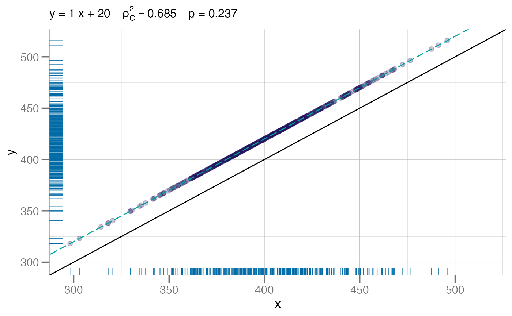

A concordance plot of 2 numeric vectors, passed either as a
2-column data.frame/tibble object or separately as x and y.
For cc.type = "ccc", Lin's Concordance Correlation Coefficient as
is used to estimate the correlation coefficient.
For all other allowed values of cc.type,
stats::cor.test() is used.
Usage
plotConcord(x, ...)
# S3 method for class 'numeric'
plotConcord(x, y, ...)
# S3 method for class 'data.frame'
plotConcord(
x,
x.lab = "x",
y.lab = "y",
main = NULL,
pt.col = soma_purple,
pt.size = 2,
add.rug = TRUE,
identify = FALSE,
all.labels = seq_len(nrow(x)),
spread = 1,
label.size = 3,
cc.type = c("ccc", "pearson", "spearman", "kendall"),
...
)Arguments
- x
Numeric. First vector comparison (x-axis). Alternatively,
xcan be a two columndata framecontaining vector data to compare.- ...
For extensibility to S3 methods.
- y
Numeric. Second vector comparison (y-axis). Omitted if
xis adata.frame.- x.lab
Character. Optional string for the x-axis. Otherwise one is automatically generated (default).
- y.lab
Character. Optional string for the y-axis. Otherwise one is automatically generated (default).
- main
Character. Main title for the plot. See
ggtitle()forggplot2style graphics.- pt.col
Character. The color to be used for the points.
- pt.size
Numeric. The point size.
- add.rug
Logical. If
TRUE, axis includes ticks for each point.- identify
Logical. If
TRUE, points are auto-identified.- all.labels
Character. The labels for each point if
identify = TRUE. The points that are actually labeled is determined by thespread =argument. The default simply numbers the points.- spread
Numeric. The width from the unit line to start labeling points. The default (
spread = 1) is reasonable for log10-transformed RFU data.- label.size
Numeric. The size for the point labels.
- cc.type
Character. The correlation coefficient estimator to use. Must be one of
c("ccc", "pearson", "spearman", "kendall").
Value
A concordance plot with the squared correlation coefficient and related statistics as a sub-title, a robust linear regression fit line, the unit line, and optionally labeled points.
References
Lin, Lawrence I-Kuei. 1989. A Concordance Correlation Coefficient to Evaluate Reproducibility. Biometrics. 45:255-268.
See also
cor(), rlm(), cor.test()
Examples
x <- withr::with_seed(1234L, rnorm(500, 400, 30))
# bias
plotConcord(x, x + 20)

# scale
plotConcord(x, x * 1.2)
 # random
y <- x + withr::with_seed(2345L, rnorm(500, sd = sd(x) / 2))
plotConcord(x, y - (y * 0.02))
# random
y <- x + withr::with_seed(2345L, rnorm(500, sd = sd(x) / 2))
plotConcord(x, y - (y * 0.02))
 # using Spearman's Correlation Coefficient
plotConcord(x, y - (y * 0.02), cc.type = "spearman")
# using Pearson's Correlation Coefficient
plotConcord(x, y - (y * 0.02), cc.type = "pearson")
# using Spearman's Correlation Coefficient
plotConcord(x, y - (y * 0.02), cc.type = "spearman")
# using Pearson's Correlation Coefficient
plotConcord(x, y - (y * 0.02), cc.type = "pearson")
 # using Kendall's Correlation Coefficient
plotConcord(x, y - (y * 0.02), cc.type = "kendall")
# using Kendall's Correlation Coefficient
plotConcord(x, y - (y * 0.02), cc.type = "kendall")
 # Label points by number (default)
plotConcord(x, y - (y * 0.02), identify = TRUE, spread = 25)
#> ✓ Auto-labeling 69 points by spread = 25
# Label points by number (default)
plotConcord(x, y - (y * 0.02), identify = TRUE, spread = 25)
#> ✓ Auto-labeling 69 points by spread = 25
 # S3 data frame method
df <- data.frame(x = x, y = y - (y * 0.02))
plotConcord(df, identify = TRUE, spread = 25)
#> ✓ Auto-labeling 69 points by spread = 25
# S3 data frame method
df <- data.frame(x = x, y = y - (y * 0.02))
plotConcord(df, identify = TRUE, spread = 25)
#> ✓ Auto-labeling 69 points by spread = 25